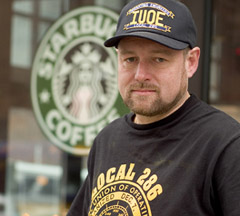

Submitted on Tue, 05/09/2006 - 7:02pm
Earlier this year the National Labor Relations Board handed down a decision that paved the way for the IWW to turn three Starbucks in the city into union shops. Of course, according to the Delocator there are 193 Starbucks in a 20-mile radius of the 10001 zip code. In comparison there are 223 non-Starbucks. . .
Read the entire article here: http://www.dane101.com/delocator052006
Submitted on Thu, 03/23/2006 - 6:32pm
By CYDNEY GILLIS - Staff Reporter; reposted from RealChangeNews.Org, March 9, 2006.
 Starbucks settled 15 charges of unfair labor practices in New York Tuesday — a move the Industrial Workers of the World are hailing as a victory in their drive to unionize the coffee’s giants baristas.
The Wobblies say Starbucks agreed to reinstate two union members who had lost their jobs — Sarah Bender and Anthony Polanco — and stop interfering with union organizing activities.
The settlement is so complete, says one IWW member, it’s a virtual “neutrality agreement” that sets the stage for the union to expand its efforts.
Submitted on Thu, 03/23/2006 - 12:49pm
Reposted from Labourstart.Org.
Last week we urged all of you to send off messages in support of the heroic effort by a plucky New Zealand union to organize workers at McDonalds -- and we mentioned their high-profile strike at Starbucks as well.
We have been asked to clarify that (a) in several European and Latin American countries, strong union movements have succeeded in organizing McDonalds, and (b) in Canada, an effort was made to unionize Starbucks by the Canadian Auto Workers, leading to a well-publicized 'unstrike' back in 1999.
That having been said, McDonald's must surely be on the top of everyone's list who is concerned about the growth of the non-union, low-paid workforce -- which is why we all need to send off thousands more messages to McDonald's in New Zealand in support of the Super Size My Pay campaign:
http://www.labourstart.org/cgi-bin/solidarityforever/show_campaign.cgi?c=80
Submitted on Tue, 03/21/2006 - 9:56pm
By Kris Maher and Janet Adamy, The Wall Street Journal - Tuesday, March 21, 2006
Unions haven't had much luck organizing Starbucks Corp.'s baristas, many of whom are part-timers or college students with little incentive to sign union cards since they're not planning on building long-term careers brewing venti skim lattes.
The latest to try to organize the company's workers is the Industrial Workers of the World, a union with a long, feisty history and a counter-cultural aura.
Starbucks recently settled a complaint issued by the National Labor Relations Board that contained more than two dozen unfair labor practice allegations brought against the company by the IWW. The settlement stemmed from disputes at just three stores in New York City and will likely have little impact on the vast majority of Starbucks workers. But it illustrates the careful approach the company is taking toward labor activists as Wal-Mart Stores Inc. and other union targets try to rebuild their images after union campaigns tarnished their reputations.
Submitted on Thu, 03/09/2006 - 11:48am
March 9, 2006, 1:55 AM EST - AP New York; reposted from Newsday.

SEATTLE (AP) _ A union that sought to represent Starbucks Corp. baristas at three Manhattan coffeehouses says it will ramp up its organizing efforts now that the company has settled an unfair labor practice complaint.
A branch of the Industrial Workers of the World that calls itself IWW Starbucks Workers Union characterized Tuesday's settlement as a victory for union organizing. Among other things, it requires Starbucks to post notices at the three stores named in the complaint stating that employees have the right to join a union.